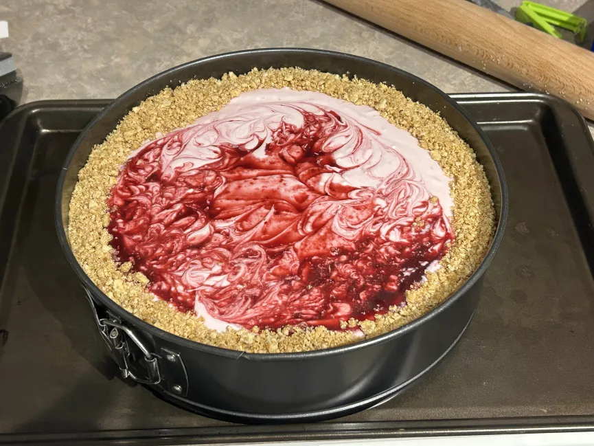

Raspberry Cheesecake

This raspberry-cheesecake is a rich creamy dessert,balanced by the tartness of the raspberry.
Ingredients:
Sauce:
- Raspberries(fresh or frozen)
- 1/4 Cup Sugar
- 1/4 Cup Water
- 1 Tbsp Lime Juice(or Lemon)
Crust:
- Graham Crackers(or Oreos) Crushed
- 1/3 Cup Butter
- If you're using Graham Crackers, add in 2 Tbsp of Sugar
Cheesecake:
- 3 Bricks Cream Cheese
- 3/4 Cup Sugar
- 2 Tsp Vanilla Extract
- 3 Large Eggs
Instructions:
Sauce:
- In a small pot or sauce pan, combine raspberries, sugar, water, and lime juice. Set heat on stove-top to medium. Stir frequently so that the juices from the raspberries release.
- Bring mixture to a simmer and cook for a couple minutes till the berries have broken down.
- Remove heat and strain the sauce through a fine-mesh siev or cheesecloth. Add back about 2 tbsp of the seeds into your sauce and discard the rest. Set aside for now and allow to cool.
Crust:
- Preheat your oven to 325F (165C). In a medium bowl, slowly pour melted butter over your crushed oreos (If you're usuing graham crackers, combine sugar and graham crackers first before adding your butter).
- Press your buttered oreo mixture into the bottom and rim of a 9" springform pan. Use a the bottom of a glass to really get into the edges and walls of the pan. Once you have a complete crust, set it aside while you work on the cheesecake.
Cheesecake:
- In a large bowl, combine your cream cheese, sour cream, vanilla and sugar and whisk or use an electric mixer to stir till creamy.
- Add in your 3 large eggs one at a time, ing sure all ingredients are thoroughly incorporated.
- Add in half (or more) of your raspberry sauce into the cream cheese mixture and stir till combined.
- Pour the cheesecake batter into your crust. If the walls of your crust are uneven, or are poking out over the cheesecake, push the cookie bits down and onto the cheesecake to form a nice ring. Use any remaining oreos to fill in any gaps in the crust ring.
- Gently pour your remaining sauce overtop of your cheesecake and use a toothpick to create swirls on top.
- Transfer cheesecake to preheated oven and bake for 45 - 55 Minutes. The center should still be jiggle but the outside mostly set.
- Once complete, turn off oven and open the door to let out hot air. leave the cheesecake in the warm oven to allow to cool slowly.
- Once cooled, transfer the cheesecake to the fridge and allow to set for at least 6 hours or preferably overnight.
Home